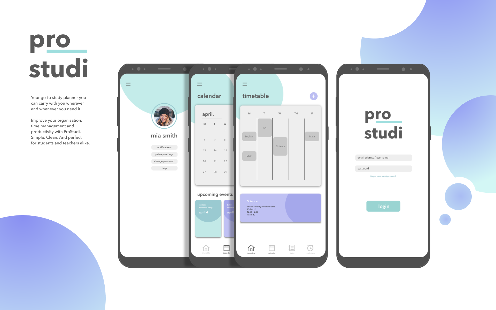
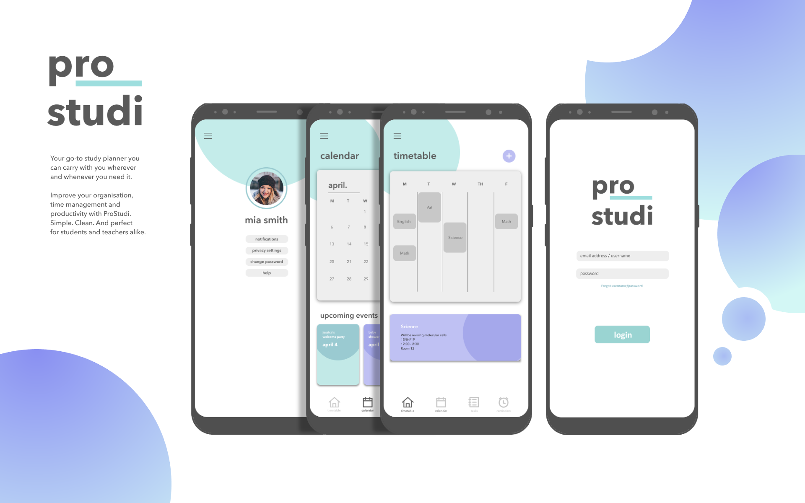

Project Overview —
Design Problem
How will we design an application that will enhance productivity, organisation and time management for students? Our primary goal was to focus on UI/UX design to develop an application that implements these features for our target audience.
Design Approach
Design Thinking was used throughout the process. Using this approach, we were able to focus on user needs and the target audience, as well as prototyping and testing with consideration of the user requirements.
Team
This project was created and completed as a group project consisting of 4 members
Role
My role mainly focused on creating the wireframes, prototypes as well as finalising the overall design. The research and brainstorming was completed as a group where ideas were collected, shared, and compiled.
Tools
- InVision
- Lucidchart
- Google Forms
Intended Users —
The main purpose of a study application is to enable students access to features which improve their study lifestyle including time management and productivity, thus, we decided to focus on three user groups separated into different learning levels. Features that will improve their busy schedules and provide more effective planning of time and schedules. All three user groups share common ground in terms of their requirements and needs. This shared aspect provides study applications a more closed and minute scope of their audience and certain features they would need to include in their app.
Competitor Research —
Three similar applications were chosen for comparison of their features, target audience, interface design and visual aesthetics and app design. We did competitor research because it was an important part of the research process that allowed us to better understand what our intended users require and what specific functionality and features will help target the design problem.
Personas —
Personas were made to provide a better understanding and closer repesentation of the possible target user. It was essential for the research process, that we detailed a list of potential needs and goals of the user. This helped generate a clear idea of the features and functionality to consider. It was also important that we were aware that different users have different skills and experience levels in terms of mobile and technology proficiency. This was an aspect to take into account, particularly for first-time users of the app.
Key Path Scenario —
Based off the user research and personas, a key path scenerio was created to depict the users' actions and the system's possible response to that action when given a task to complete. The key path scenario illustrates the user interaction process, enabling us to better understand and discern how the user experience and interface will be presented to the user.

Wireframes —
Low-fidelity prototypes were created to visualise the overall design and interface of the application. Throughout the creation of the wireframes, I had to consider the user research and competitor research conducted, and generate solutions to integrate it into the interface design.

Prototyping —
High-fidelity prototypes were created to visualise user interaction. InVision Studio was used to depict the flow of interaction and how the elements would respond when there was user interaction. By envisioning the user interaction through prototypes, I was able to highlight areas and features that required further revision due to the lack of clarity it may have created for users.

Usability Testing —
Users who best matched the application's target audience were selected and were required to complete two tasks each to see the effectiveness of the design when put to action. Using the prototypes, usability testing was conducted and results were recorded.
Tasks
- Login and add a class to your timetable
- Check details for ‘Science’ class then Log Out
- Login and add a reminder, then add reminder to the calendar
- Go to 14th April on the calendar to check the reminder
- Login and add a task
- Delete task ‘read pages 12-20’ then Log Out
Issues
- The '+' icon was not clear in regards to its feature and functionality (i.e. Users unsure whether it implied adding a new class or adding a new timetable)
- Some users found it difficult to differentiate between the 'Reminders' and 'Tasks' icon because of the close similarity of its design
Possible solutions
- Change the '+' icon into a button that explicitly displays the function (i.e. 'Add New Class')
- Change the 'Reminders' or 'Tasks' icon to an infographic that will better communicate and reflect the feature
UI Kit + Final —
 

Reflection —
What do you think was done well?
I think the communication and efficiency of the design process within the team was performed well as this allowed more time and room for improvement and touch ups of the final result before submission.
What could have been improved?
While the application includes features that were most desirable based off the user survey conducted on students, other features could have been implemented which may have enhanced productivity and time management. More testing could have been done in order to ensure that the chosen features were more effective for the target user.
What would I do differently if I were to approach the same problem again?
I would try to make the key path scenario more user friendly, such as creating a diagram or creating a user flow or user journey. This would create an easier understanding for clients who were to go through the process as well.
↑